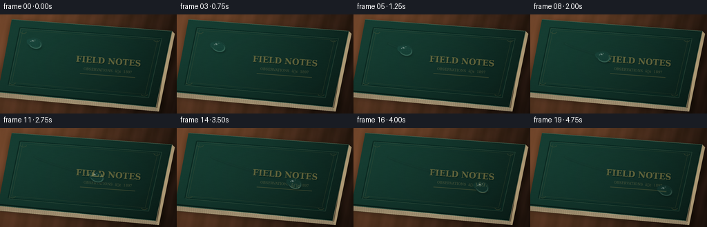
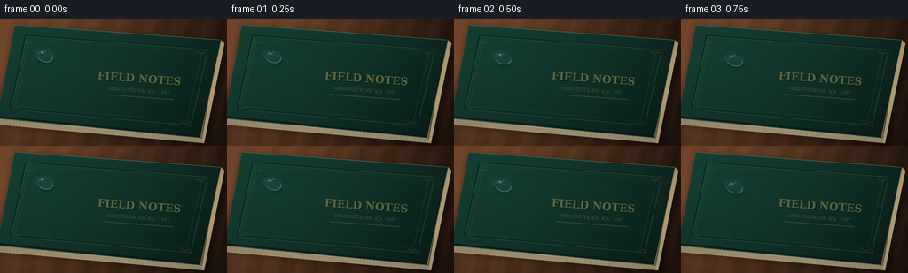

CODING AGENTS AS PIXEL WORLD MODELS
traex/GPT-5.6-Sol · phygen_040
点击播放 · 原生 RGB 像素
逐轮保存的候选
回放视频、检查图与代码变化。
每份候选均可单独播放。实际图片检查记录在下方工具轨迹中。
候选 01播放与检查图
点击播放 · 原生 RGB 像素


展开代码变化
--- 上一保存版本
+++ 本次保存版本
@@ -0,0 +1,256 @@
+from pathlib import Path
+import math
+import numpy as np
+from PIL import Image, ImageDraw, ImageFont, ImageFilter
+import artifact_io
+
+# Deterministic, entirely procedural macro cinematography.
+ROOT = Path(__file__).resolve().parent
+W, H, N = 256, 144, 20
+S = 4
+w, h = W*S, H*S
+rng = np.random.default_rng(4037)
+
+
+def smooth_noise(height, width, radius, seed_scale=1.0):
+ a = rng.normal(127, 34*seed_scale, (height, width)).clip(0,255).astype(np.uint8)
+ return np.asarray(Image.fromarray(a).filter(ImageFilter.GaussianBlur(radius)), np.float32) - 127
+
+
+def polygon_mask(points, blur=0):
+ m = Image.new('L', (w, h), 0)
+ ImageDraw.Draw(m).polygon([(int(x*S), int(y*S)) for x,y in points], fill=255)
+ if blur:
+ m = m.filter(ImageFilter.GaussianBlur(blur*S))
+ return np.asarray(m, np.float32)/255.0
+
+# Coordinate grids in output-pixel units, despite rendering at 4x.
+yy, xx = np.mgrid[0:h, 0:w]
+X, Y = xx/S, yy/S
+
+# --- Warm, out-of-focus walnut desktop ---
+coarse = smooth_noise(h, w, 30*S, 1.5)
+medium = smooth_noise(h, w, 6*S, 0.8)
+# Long grain follows the book's diagonal and remains soft like a macro background.
+grain_coord = X + 0.22*Y
+woodgrain = (np.sin(grain_coord*.19 + np.sin(Y*.08)*1.1) +
+ .42*np.sin(grain_coord*.51 + 1.7) +
+ .15*np.sin(grain_coord*1.28))
+light = 1.11 - .0026*X - .0013*Y
+basewood = np.zeros((h,w,3), np.float32)
+for c, val in enumerate((104, 66, 42)):
+ basewood[:,:,c] = val*light + coarse*.12 + medium*.08 + woodgrain*(5.1 if c==0 else 3.1)
+# A broad amber pool of window light.
+pool = np.exp(-(((X-48)/100)**2 + ((Y-20)/70)**2))
+basewood += pool[:,:,None]*np.array([17,11,5])
+basewood = np.clip(basewood,0,255).astype(np.uint8)
+basewood = np.asarray(Image.fromarray(basewood).filter(ImageFilter.GaussianBlur(1.2*S)))
+scene = Image.fromarray(basewood, 'RGB').convert('RGBA')
+
+# --- The physical book: shadow, cream page block, and green cloth cover ---
+cover_poly = [(17,7), (249,24), (225,135), (-3,113)]
+shadow = Image.new('RGBA',(w,h),(0,0,0,0))
+sd = ImageDraw.Draw(shadow)
+sd.polygon([(int((x+4)*S),int((y+5)*S)) for x,y in cover_poly], fill=(7,6,5,170))
+shadow = shadow.filter(ImageFilter.GaussianBlur(5.5*S))
+scene = Image.alpha_composite(scene,shadow)
+
+# Bottom page block peeking out along the fore edge.
+page_layer = Image.new('RGBA',(w,h),(0,0,0,0))
+pd = ImageDraw.Draw(page_layer)
+pd.polygon([(0,108*S),(18*S,11*S),(252*S,27*S),(230*S,141*S),(0,121*S)], fill=(92,76,53,255))
+pd.polygon([(0,112*S),(225*S,134*S),(230*S,141*S),(0,120*S)], fill=(202,188,153,255))
+# Individually visible paper leaves.
+for j in range(9):
+ y0 = 113.0 + j*.78
+ pd.line([(0,int(y0*S)),(int(228*S),int((y0+21.2)*S))],
+ fill=(116+7*(j%2),106+6*(j%2),83,150), width=max(1,S//2))
+# Bright deckled edge.
+pd.line([(1,113*S),(225*S,135*S)],fill=(236,222,183,210),width=S)
+# Right page block.
+pd.polygon([(249*S,24*S),(253*S,28*S),(230*S,141*S),(225*S,135*S)], fill=(183,166,128,255))
+for j in range(5):
+ x0=249-j*.7
+ pd.line([(int(x0*S),int((25+j*.35)*S)),(int((226+j*.45)*S),int(136*S))],fill=(114,101,76,120),width=1)
+scene = Image.alpha_composite(scene,page_layer)
+
+cover_mask = polygon_mask(cover_poly)
+# Green book cloth: multi-scale pigment variation plus a woven crosshatch.
+low = smooth_noise(h,w,15*S,1.0)
+mid = smooth_noise(h,w,2.1*S,.8)
+fine = rng.normal(0,1,(h,w)).astype(np.float32)
+# rotate texture coordinates with the cover's top edge
+u = X*np.cos(.074)+Y*np.sin(.074)
+v = -X*np.sin(.074)+Y*np.cos(.074)
+weave = 1.5*np.sin(u*math.pi*1.32) + 1.15*np.sin(v*math.pi*1.14)
+weave += .55*np.sin((u+v)*math.pi*2.1)
+illum = 1.12 - .00175*X - .0018*Y
+cover = np.empty((h,w,4),np.uint8)
+colors=np.array([23.,66.,55.])
+tex=low*.10+mid*.16+fine*1.10+weave
+for c in range(3):
+ cover[:,:,c]=np.clip(colors[c]*illum+tex*(.72 if c==0 else 1.0),0,255)
+cover[:,:,3]=np.uint8(cover_mask*255)
+scene = Image.alpha_composite(scene,Image.fromarray(cover,'RGBA'))
+
+# Thin hard-cover edges and cloth seam.
+details = Image.new('RGBA',(w,h),(0,0,0,0))
+d = ImageDraw.Draw(details)
+def pts(seq): return [(int(x*S),int(y*S)) for x,y in seq]
+d.line(pts([(17,7),(249,24),(225,135),(-3,113)]), fill=(81,111,91,210), width=S)
+d.line(pts([(-2,111),(225,133)]), fill=(7,30,25,230), width=2*S)
+d.line(pts([(248,24),(225,135)]), fill=(7,29,24,190), width=S)
+# Recessed double-rule border, deliberately subtle and tactile.
+inner=[(29,19),(233,34),(214,120),(12,102),(29,19)]
+inner2=[(33,23),(228,37),(210,116),(17,99),(33,23)]
+d.line(pts(inner), fill=(8,40,33,190), width=2*S)
+d.line([(x+S,y+S) for x,y in pts(inner)], fill=(72,103,82,100), width=S)
+d.line(pts(inner2), fill=(103,111,66,83), width=max(1,S//2))
+# Small corner ornaments.
+for cx,cy,sgnx,sgny in [(34,24,1,1),(227,36,-1,1),(209,115,-1,-1),(18,98,1,-1)]:
+ d.arc((int((cx-5)*S),int((cy-4)*S),int((cx+5)*S),int((cy+4)*S)),20,160,fill=(124,117,67,65),width=S)
+scene = Image.alpha_composite(scene,details)
+
+# Gently embossed title, transformed to align with the book's top edge.
+title = Image.new('RGBA',(150*S,55*S),(0,0,0,0))
+td=ImageDraw.Draw(title)
+font_path='/usr/share/fonts/truetype/dejavu/DejaVuSerif.ttf'
+font_bold='/usr/share/fonts/truetype/dejavu/DejaVuSerif-Bold.ttf'
+try:
+ f1=ImageFont.truetype(font_bold,12*S)
+ f2=ImageFont.truetype(font_path,5*S)
+except Exception:
+ f1=ImageFont.load_default(); f2=ImageFont.load_default()
+label='FIELD NOTES'
+b=td.textbbox((0,0),label,font=f1); tw=b[2]-b[0]
+# dark deboss edge then worn bronze foil
+td.text(((150*S-tw)//2+S,4*S+S),label,font=f1,fill=(3,27,22,125))
+td.text(((150*S-tw)//2,4*S),label,font=f1,fill=(157,142,77,142),stroke_width=0)
+sub='OBSERVATIONS ⢠1897'
+b=td.textbbox((0,0),sub,font=f2); sw=b[2]-b[0]
+td.text(((150*S-sw)//2,22*S),sub,font=f2,fill=(154,143,89,102))
+td.line([(35*S,32*S),(115*S,32*S)],fill=(146,132,74,75),width=1*S)
+title=title.rotate(-4.2,resample=Image.Resampling.BICUBIC,expand=True)
+scene.alpha_composite(title,(79*S,51*S))
+
+# A very slight optical vignette is built into each frame later.
+base = np.asarray(scene.convert('RGB'),np.uint8)
+
+# Book-space path, with smooth acceleration/deceleration.
+def drop_center(t):
+ q=t/(N-1)
+ e=q*q*(3-2*q)
+ return (50+145*e, 42+49*e + 1.8*math.sin(q*math.pi*2))
+
+path_pts=[drop_center(i) for i in range(N)]
+angle=math.atan2(49,145)
+ca,sa=math.cos(angle),math.sin(angle)
+
+
+def bilinear_sample(img, sx, sy):
+ hh,ww=img.shape[:2]
+ sx=np.clip(sx,0,ww-1.001); sy=np.clip(sy,0,hh-1.001)
+ x0=np.floor(sx).astype(np.int32); y0=np.floor(sy).astype(np.int32)
+ x1=x0+1; y1=y0+1
+ ax=(sx-x0)[...,None]; ay=(sy-y0)[...,None]
+ p00=img[y0,x0].astype(np.float32); p10=img[y0,x1].astype(np.float32)
+ p01=img[y1,x0].astype(np.float32); p11=img[y1,x1].astype(np.float32)
+ return p00*(1-ax)*(1-ay)+p10*ax*(1-ay)+p01*(1-ax)*ay+p11*ax*ay
+
+
+def add_drop(frame_img, frame_index, cx, cy):
+ # Contact shadow and refracted wet trail are separate physical layers.
+ rx = 11.4 + .35*math.sin(frame_index*.7)
+ ry = 8.3 - .25*math.sin(frame_index*.7)
+ bx0=max(0,int((cx-18)*S)); bx1=min(w,int((cx+18)*S)+1)
+ by0=max(0,int((cy-16)*S)); by1=min(h,int((cy+16)*S)+1)
+ p=np.asarray(frame_img.convert('RGB'),np.uint8).copy()
+ py,px=np.mgrid[by0:by1,bx0:bx1]
+ dx=px/S-cx; dy=py/S-cy
+ lx=ca*dx+sa*dy
+ ly=-sa*dx+ca*dy
+ # Main rounded dome plus a smaller adhering heel at the back gives a sliding teardrop.
+ rmain=((lx-.6)/rx)**2+(ly/ry)**2
+ rheel=((lx+7.1)/6.0)**2+(ly/4.8)**2
+ rr=np.minimum(rmain,rheel)
+ edge=np.clip((1.0-rr)*4.0,0,1)
+ inside=rr<1.0
+ z=np.sqrt(np.clip(1-rr,0,1))
+
+ # Soft displaced contact shadow, most visible on lower-right.
+ sh=((lx-1.6)/(rx*1.04))**2+((ly-2.0)/(ry*.95))**2
+ shadow=np.exp(-np.maximum(sh-.70,0)*8.0)*(sh<1.35)*.19
+ patch=p[by0:by1,bx0:bx1].astype(np.float32)
+ patch*=1-shadow[...,None]
+
+ # Convex lens: cloth and gold lettering are magnified and slightly displaced.
+ source_dx=dx*.64 - .65*z + .24*ly/ry
+ source_dy=dy*.64 - .42*z
+ sampled=bilinear_sample(base, cx*S+source_dx*S, cy*S+source_dy*S)
+ lens=sampled*1.035 + np.array([1.0,5.0,5.5])
+ # Directional illumination through the volume.
+ directional=np.clip((-lx/rx-.65*ly/ry+1)/2,0,1)
+ lens += (directional*z)[...,None]*np.array([4.2,5.8,6.2])
+ # Dark, high-Fresnel contact rim makes the transparent silhouette readable.
+ rim=np.exp(-((np.sqrt(np.clip(rr,0,None))-.92)/.075)**2)
+ lens *= (1-.17*rim[...,None])
+ # Lower/front inner caustic crescent.
+ cres=np.exp(-((np.sqrt(np.clip(rr,0,None))-.79)/.075)**2)
+ cres*=np.clip((.65*lx/rx+ly/ry+.35),0,1)
+ lens += cres[...,None]*np.array([42.,48.,43.])
+
+ # White reflection of a softbox/window and pinpoint sparkle.
+ spec=np.exp(-(((lx+3.6)/2.15)**2+((ly+2.8)/1.35)**2)*2.0)
+ spec2=np.exp(-(((lx+6.0)/.67)**2+((ly+1.0)/.62)**2)*2.2)
+ # Moving micro-glint adds life without changing the light source.
+ gx=-1.0+.5*math.sin(frame_index*.55); gy=-5.15+.25*math.cos(frame_index*.7)
+ glint=np.exp(-(((lx-gx)/.52)**2+((ly-gy)/.48)**2)*2.0)
+ lens = lens*(1-spec[...,None]*.58) + np.array([238,248,244])*spec[...,None]*.58
+ lens = lens*(1-spec2[...,None]*.75) + 255*spec2[...,None]*.75
+ lens = lens*(1-glint[...,None]*.90) + np.array([255,255,248])*glint[...,None]*.90
+ # Thin cool reflection along the upper perimeter.
+ upper=np.exp(-((np.sqrt(np.clip(rr,0,None))-.965)/.032)**2)*np.clip((-ly/ry+.1),0,1)
+ lens += upper[...,None]*np.array([38.,53.,55.])
+
+ alpha=edge*.94
+ alpha*=inside
+ patch=patch*(1-alpha[...,None])+np.clip(lens,0,255)*alpha[...,None]
+ p[by0:by1,bx0:bx1]=np.clip(patch,0,255).astype(np.uint8)
+ return Image.fromarray(p,'RGB')
+
+frames=[]
+for i in range(N):
+ im=Image.fromarray(base,'RGB').convert('RGBA')
+ # Damp trail appears progressively, catches light, and confirms sliding rather than hovering.
+ if i>1:
+ tr=Image.new('RGBA',(w,h),(0,0,0,0)); dr=ImageDraw.Draw(tr)
+ trail=[]
+ # smooth densely sampled path only up to just behind the current drop
+ lim=max(0,(i/(N-1))-.035)
+ for k in range(80):
+ q=lim*k/79
+ e=q*q*(3-2*q)
+ trail.append((int((50+145*e)*S),int((42+49*e+1.8*math.sin(q*math.pi*2))*S)))
+ if len(trail)>1:
+ dr.line(trail,fill=(3,25,23,34),width=3*S,joint='curve')
+ # offset hairline is a grazing reflection on the wet trace
+ hi=[(x,y-S//2) for x,y in trail]
+ dr.line(hi,fill=(151,186,166,21),width=max(1,S//2),joint='curve')
+ tr=tr.filter(ImageFilter.GaussianBlur(.65*S))
+ im=Image.alpha_composite(im,tr)
+ cx,cy=path_pts[i]
+ im=add_drop(im,i,cx,cy).convert('RGBA')
+
+ # Macro lens finishing: vignette and warm/cool cinematic grade.
+ arr=np.asarray(im.convert('RGB'),np.float32)
+ vig=1-.18*np.clip(((X-128)/171)**2+((Y-70)/108)**2,0,1)
+ arr*=vig[...,None]
+ arr[:,:,0]*=1.025; arr[:,:,2]*=.985
+ arr=np.clip(arr,0,255).astype(np.uint8)
+ # High-quality supersample resolves fibers and the curved liquid edge.
+ out=Image.fromarray(arr).resize((W,H),Image.Resampling.LANCZOS)
+ frames.append(np.asarray(out,np.uint8))
+
+frames=np.stack(frames,axis=0)
+assert frames.shape==(N,H,W,3) and frames.dtype==np.uint8
+artifact_io.save(frames,ROOT)
可观测工具轨迹
实际执行的命令与返回图片。
命令 1exit 0
/bin/bash -lc "cat prompt.txt && printf '\\n---RULES---\\n' && cat GENERATION_RULES.md && printf '\\n---SPEC---\\n' && cat task_spec.json"
命令 2exit 0
/bin/bash -lc "find . -maxdepth 2 -type f -printf '%p %s bytes\\n' | sort && printf '\\nTOOLS\\n' && command -v ffmpeg || true && command -v blender || true && command -v python3 || true"
命令 3exit 0
/bin/bash -lc "sed -n '1,240p' artifact_io.py"
命令 4exit 0
/bin/bash -lc "python3 - <<'PY'
try:
import PIL; print('PIL',PIL.__version__)
except Exception as e: print('no PIL',e)
try:
import numpy; print('numpy',numpy.__version__)
except Exception as e: print('no numpy',e)
PY"命令 5exit 0
/bin/bash -lc "cat > generate.py <<'PY'
from pathlib import Path
import math
import numpy as np
from PIL import Image, ImageDraw, ImageFont, ImageFilter
import artifact_io
# Deterministic, entirely procedural macro cinematography.
ROOT = Path(__file__).resolve().parent
W, H, N = 256, 144, 20
S = 4
w, h = W*S, H*S
rng = np.random.default_rng(4037)
def smooth_noise(height, width, radius, seed_scale=1.0):
a = rng.normal(127, 34*seed_scale, (height, width)).clip(0,255).astype(np.uint8)
return np.asarray(Image.fromarray(a).filter(ImageFilter.GaussianBlur(radius)), np.float32) - 127
def polygon_mask(points, blur=0):
m = Image.new('L', (w, h), 0)
ImageDraw.Draw(m).polygon([(int(x*S), int(y*S)) for x,y in points], fill=255)
if blur:
m = m.filter(ImageFilter.GaussianBlur(blur*S))
return np.asarray(m, np.float32)/255.0
# Coordinate grids in output-pixel units, despite rendering at 4x.
yy, xx = np.mgrid[0:h, 0:w]
X, Y = xx/S, yy/S
# --- Warm, out-of-focus walnut desktop ---
coarse = smooth_noise(h, w, 30*S, 1.5)
medium = smooth_noise(h, w, 6*S, 0.8)
# Long grain follows the book's diagonal and remains soft like a macro background.
grain_coord = X + 0.22*Y
woodgrain = (np.sin(grain_coord*.19 + np.sin(Y*.08)*1.1) +
.42*np.sin(grain_coord*.51 + 1.7) +
.15*np.sin(grain_coord*1.28))
light = 1.11 - .0026*X - .0013*Y
basewood = np.zeros((h,w,3), np.float32)
for c, val in enumerate((104, 66, 42)):
basewood[:,:,c] = val*light + coarse*.12 + medium*.08 + woodgrain*(5.1 if c==0 else 3.1)
# A broad amber pool of window light.
pool = np.exp(-(((X-48)/100)**2 + ((Y-20)/70)**2))
basewood += pool[:,:,None]*np.array([17,11,5])
basewood = np.clip(basewood,0,255).astype(np.uint8)
basewood = np.asarray(Image.fromarray(basewood).filter(ImageFilter.GaussianBlur(1.2*S)))
scene = Image.fromarray(basewood, 'RGB').convert('RGBA')
# --- The physical book: shadow, cream page block, and green cloth cover ---
cover_poly = [(17,7), (249,24), (225,135), (-3,113)]
shadow = Image.new('RGBA',(w,h),(0,0,0,0))
sd = ImageDraw.Draw(shadow)
sd.polygon([(int((x+4)*S),int((y+5)*S)) for x,y in cover_poly], fill=(7,6,5,170))
shadow = shadow.filter(ImageFilter.GaussianBlur(5.5*S))
scene = Image.alpha_composite(scene,shadow)
# Bottom page block peeking out along the fore edge.
page_layer = Image.new('RGBA',(w,h),(0,0,0,0))
pd = ImageDraw.Draw(page_layer)
pd.polygon([(0,108*S),(18*S,11*S),(252*S,27*S),(230*S,141*S),(0,121*S)], fill=(92,76,53,255))
pd.polygon([(0,112*S),(225*S,134*S),(230*S,141*S),(0,120*S)], fill=(202,188,153,255))
# Individually visible paper leaves.
for j in range(9):
y0 = 113.0 + j*.78
pd.line([(0,int(y0*S)),(int(228*S),int((y0+21.2)*S))],
fill=(116+7*(j%2),106+6*(j%2),83,150), width=max(1,S//2))
# Bright deckled edge.
pd.line([(1,113*S),(225*S,135*S)],fill=(236,222,183,210),width=S)
# Right page block.
pd.polygon([(249*S,24*S),(253*S,28*S),(230*S,141*S),(225*S,135*S)], fill=(183,166,128,255))
for j in range(5):
x0=249-j*.7
pd.line([(int(x0*S),int((25+j*.35)*S)),(int((226+j*.45)*S),int(136*S))],fill=(114,101,76,120),width=1)
scene = Image.alpha_composite(scene,page_layer)
cover_mask = polygon_mask(cover_poly)
# Green book cloth: multi-scale pigment variation plus a woven crosshatch.
low = smooth_noise(h,w,15*S,1.0)
mid = smooth_noise(h,w,2.1*S,.8)
fine = rng.normal(0,1,(h,w)).astype(np.float32)
# rotate texture coordinates with the cover's top edge
u = X*np.cos(.074)+Y*np.sin(.074)
v = -X*np.sin(.074)+Y*np.cos(.074)
weave = 1.5*np.sin(u*math.pi*1.32) + 1.15*np.sin(v*math.pi*1.14)
weave += .55*np.sin((u+v)*math.pi*2.1)
illum = 1.12 - .00175*X - .0018*Y
cover = np.empty((h,w,4),np.uint8)
colors=np.array([23.,66.,55.])
tex=low*.10+mid*.16+fine*1.10+weave
for c in range(3):
cover[:,:,c]=np.clip(colors[c]*illum+tex*(.72 if c==0 else 1.0),0,255)
cover[:,:,3]=np.uint8(cover_mask*255)
scene = Image.alpha_composite(scene,Image.fromarray(cover,'RGBA'))
# Thin hard-cover edges and cloth seam.
details = Image.new('RGBA',(w,h),(0,0,0,0))
d = ImageDraw.Draw(details)
def pts(seq): return [(int(x*S),int(y*S)) for x,y in seq]
d.line(pts([(17,7),(249,24),(225,135),(-3,113)]), fill=(81,111,91,210), width=S)
d.line(pts([(-2,111),(225,133)]), fill=(7,30,25,230), width=2*S)
d.line(pts([(248,24),(225,135)]), fill=(7,29,24,190), width=S)
# Recessed double-rule border, deliberately subtle and tactile.
inner=[(29,19),(233,34),(214,120),(12,102),(29,19)]
inner2=[(33,23),(228,37),(210,116),(17,99),(33,23)]
d.line(pts(inner), fill=(8,40,33,190), width=2*S)
d.line([(x+S,y+S) for x,y in pts(inner)], fill=(72,103,82,100), width=S)
d.line(pts(inner2), fill=(103,111,66,83), width=max(1,S//2))
# Small corner ornaments.
for cx,cy,sgnx,sgny in [(34,24,1,1),(227,36,-1,1),(209,115,-1,-1),(18,98,1,-1)]:
d.arc((int((cx-5)*S),int((cy-4)*S),int((cx+5)*S),int((cy+4)*S)),20,160,fill=(124,117,67,65),width=S)
scene = Image.alpha_composite(scene,details)
# Gently embossed title, transformed to align with the book's top edge.
title = Image.new('RGBA',(150*S,55*S),(0,0,0,0))
td=ImageDraw.Draw(title)
font_path='/usr/share/fonts/truetype/dejavu/DejaVuSerif.ttf'
font_bold='/usr/share/fonts/truetype/dejavu/DejaVuSerif-Bold.ttf'
try:
f1=ImageFont.truetype(font_bold,12*S)
f2=ImageFont.truetype(font_path,5*S)
except Exception:
f1=ImageFont.load_default(); f2=ImageFont.load_default()
label='FIELD NOTES'
b=td.textbbox((0,0),label,font=f1); tw=b[2]-b[0]
# dark deboss edge then worn bronze foil
td.text(((150*S-tw)//2+S,4*S+S),label,font=f1,fill=(3,27,22,125))
td.text(((150*S-tw)//2,4*S),label,font=f1,fill=(157,142,77,142),stroke_width=0)
sub='OBSERVATIONS ⢠1897'
b=td.textbbox((0,0),sub,font=f2); sw=b[2]-b[0]
td.text(((150*S-sw)//2,22*S),sub,font=f2,fill=(154,143,89,102))
td.line([(35*S,32*S),(115*S,32*S)],fill=(146,132,74,75),width=1*S)
title=title.rotate(-4.2,resample=Image.Resampling.BICUBIC,expand=True)
scene.alpha_composite(title,(79*S,51*S))
# A very slight optical vignette is built into each frame later.
base = np.asarray(scene.convert('RGB'),np.uint8)
# Book-space path, with smooth acceleration/deceleration.
def drop_center(t):
q=t/(N-1)
e=q*q*(3-2*q)
return (50+145*e, 42+49*e + 1.8*math.sin(q*math.pi*2))
path_pts=[drop_center(i) for i in range(N)]
angle=math.atan2(49,145)
ca,sa=math.cos(angle),math.sin(angle)
def bilinear_sample(img, sx, sy):
hh,ww=img.shape[:2]
sx=np.clip(sx,0,ww-1.001); sy=np.clip(sy,0,hh-1.001)
x0=np.floor(sx).astype(np.int32); y0=np.floor(sy).astype(np.int32)
x1=x0+1; y1=y0+1
ax=(sx-x0)[...,None]; ay=(sy-y0)[...,None]
p00=img[y0,x0].astype(np.float32); p10=img[y0,x1].astype(np.float32)
p01=img[y1,x0].astype(np.float32); p11=img[y1,x1].astype(np.float32)
return p00*(1-ax)*(1-ay)+p10*ax*(1-ay)+p01*(1-ax)*ay+p11*ax*ay
def add_drop(frame_img, frame_index, cx, cy):
# Contact shadow and refracted wet trail are separate physical layers.
rx = 11.4 + .35*math.sin(frame_index*.7)
ry = 8.3 - .25*math.sin(frame_index*.7)
bx0=max(0,int((cx-18)*S)); bx1=min(w,int((cx+18)*S)+1)
by0=max(0,int((cy-16)*S)); by1=min(h,int((cy+16)*S)+1)
p=np.asarray(frame_img.convert('RGB'),np.uint8).copy()
py,px=np.mgrid[by0:by1,bx0:bx1]
dx=px/S-cx; dy=py/S-cy
lx=ca*dx+sa*dy
ly=-sa*dx+ca*dy
# Main rounded dome plus a smaller adhering heel at the back gives a sliding teardrop.
rmain=((lx-.6)/rx)**2+(ly/ry)**2
rheel=((lx+7.1)/6.0)**2+(ly/4.8)**2
rr=np.minimum(rmain,rheel)
edge=np.clip((1.0-rr)*4.0,0,1)
inside=rr<1.0
z=np.sqrt(np.clip(1-rr,0,1))
# Soft displaced contact shadow, most visible on lower-right.
sh=((lx-1.6)/(rx*1.04))**2+((ly-2.0)/(ry*.95))**2
shadow=np.exp(-np.maximum(sh-.70,0)*8.0)*(sh<1.35)*.19
patch=p[by0:by1,bx0:bx1].astype(np.float32)
patch*=1-shadow[...,None]
# Convex lens: cloth and gold lettering are magnified and slightly displaced.
source_dx=dx*.64 - .65*z + .24*ly/ry
source_dy=dy*.64 - .42*z
sampled=bilinear_sample(base, cx*S+source_dx*S, cy*S+source_dy*S)
lens=sampled*1.035 + np.array([1.0,5.0,5.5])
# Directional illumination through the volume.
directional=np.clip((-lx/rx-.65*ly/ry+1)/2,0,1)
lens += (directional*z)[...,None]*np.array([4.2,5.8,6.2])
# Dark, high-Fresnel contact rim makes the transparent silhouette readable.
rim=np.exp(-((np.sqrt(np.clip(rr,0,None))-.92)/.075)**2)
lens *= (1-.17*rim[...,None])
# Lower/front inner caustic crescent.
cres=np.exp(-((np.sqrt(np.clip(rr,0,None))-.79)/.075)**2)
cres*=np.clip((.65*lx/rx+ly/ry+.35),0,1)
lens += cres[...,None]*np.array([42.,48.,43.])
# White reflection of a softbox/window and pinpoint sparkle.
spec=np.exp(-(((lx+3.6)/2.15)**2+((ly+2.8)/1.35)**2)*2.0)
spec2=np.exp(-(((lx+6.0)/.67)**2+((ly+1.0)/.62)**2)*2.2)
# Moving micro-glint adds life without changing the light source.
gx=-1.0+.5*math.sin(frame_index*.55); gy=-5.15+.25*math.cos(frame_index*.7)
glint=np.exp(-(((lx-gx)/.52)**2+((ly-gy)/.48)**2)*2.0)
lens = lens*(1-spec[...,None]*.58) + np.array([238,248,244])*spec[...,None]*.58
lens = lens*(1-spec2[...,None]*.75) + 255*spec2[...,None]*.75
lens = lens*(1-glint[...,None]*.90) + np.array([255,255,248])*glint[...,None]*.90
# Thin cool reflection along the upper perimeter.
upper=np.exp(-((np.sqrt(np.clip(rr,0,None))-.965)/.032)**2)*np.clip((-ly/ry+.1),0,1)
lens += upper[...,None]*np.array([38.,53.,55.])
alpha=edge*.94
alpha*=inside
patch=patch*(1-alpha[...,None])+np.clip(lens,0,255)*alpha[...,None]
p[by0:by1,bx0:bx1]=np.clip(patch,0,255).astype(np.uint8)
return Image.fromarray(p,'RGB')
frames=[]
for i in range(N):
im=Image.fromarray(base,'RGB').convert('RGBA')
# Damp trail appears progressively, catches light, and confirms sliding rather than hovering.
if i>1:
tr=Image.new('RGBA',(w,h),(0,0,0,0)); dr=ImageDraw.Draw(tr)
trail=[]
# smooth densely sampled path only up to just behind the current drop
lim=max(0,(i/(N-1))-.035)
for k in range(80):
q=lim*k/79
e=q*q*(3-2*q)
trail.append((int((50+145*e)*S),int((42+49*e+1.8*math.sin(q*math.pi*2))*S)))
if len(trail)>1:
dr.line(trail,fill=(3,25,23,34),width=3*S,joint='curve')
# offset hairline is a grazing reflection on the wet trace
hi=[(x,y-S//2) for x,y in trail]
dr.line(hi,fill=(151,186,166,21),width=max(1,S//2),joint='curve')
tr=tr.filter(ImageFilter.GaussianBlur(.65*S))
im=Image.alpha_composite(im,tr)
cx,cy=path_pts[i]
im=add_drop(im,i,cx,cy).convert('RGBA')
# Macro lens finishing: vignette and warm/cool cinematic grade.
arr=np.asarray(im.convert('RGB'),np.float32)
vig=1-.18*np.clip(((X-128)/171)**2+((Y-70)/108)**2,0,1)
arr*=vig[...,None]
arr[:,:,0]*=1.025; arr[:,:,2]*=.985
arr=np.clip(arr,0,255).astype(np.uint8)
# High-quality supersample resolves fibers and the curved liquid edge.
out=Image.fromarray(arr).resize((W,H),Image.Resampling.LANCZOS)
frames.append(np.asarray(out,np.uint8))
frames=np.stack(frames,axis=0)
assert frames.shape==(N,H,W,3) and frames.dtype==np.uint8
artifact_io.save(frames,ROOT)
PY
python3 generate.py
ls -lh pixels.npz inspection.png index.html frames/00.png frames/19.png"命令 6exit 0
/bin/bash -lc "python3 - <<'PY'
p='generate.py'
s=open(p).read().replace(\"OBSERVATIONS ⢠1897\", \"OBSERVATIONS ⢠1897\")
open(p,'w').write(s)
PY
python3 generate.py >/tmp/generate.log 2>&1
python3 - <<'PY'
from pathlib import Path
import numpy as np
from PIL import Image
z=np.load('pixels.npz')['pixels']
assert z.shape==(144,256,20) and z.dtype==np.uint32
f=np.stack([np.asarray(Image.open(f'frames/{i:02d}.png').convert('RGB')) for i in range(20)])
assert f.shape==(20,144,256,3) and f.dtype==np.uint8
packed=((f[:,:,:,0].astype(np.uint32)<<16)|(f[:,:,:,1].astype(np.uint32)<<8)|f[:,:,:,2])
assert np.array_equal(packed.transpose(1,2,0),z)
d=np.mean(np.abs(np.diff(f.astype(np.int16),axis=0)),axis=(1,2,3))
print('validated',f.shape,f.dtype,'range',f.min(),f.max())
print('mean frame deltas:',np.round(d,3).tolist())
print('all outputs:', all(Path(x).exists() for x in ['pixels.npz','index.html','inspection.png','transition_check.png']))
PY
cat /tmp/generate.log | tail -10
git status --short 2>/dev/null || true"命令 7exit 0
/bin/bash -lc "grep -n \"sub=\" generate.py && python3 generate.py && python3 - <<'PY'
from PIL import Image
import numpy as np
for i in [0,5,10,15,19]:
a=np.array(Image.open(f'frames/{i:02}.png'))
ys,xs=np.where(a.max(2)==a.max())
print(i,a.max(),(int(xs[0]),int(ys[0])),a.mean((0,1)).round(1))
PY"命令 8exit 0
/bin/bash -lc "python3 - <<'PY'
from PIL import Image
import numpy as np, math
for i in [0,5,10,15,19]:
q=i/19;e=q*q*(3-2*q);cx=50+145*e;cy=42+49*e+1.8*math.sin(q*math.pi*2)
a=np.array(Image.open(f'frames/{i:02}.png'))
c=a[max(0,int(cy)-12):int(cy)+13,max(0,int(cx)-15):int(cx)+16]
print(i,round(cx,1),round(cy,1),'crop max',c.max(),'mean',c.mean(),'p99',np.percentile(c,99))
PY"命令 9exit 0
/bin/bash -lc "python3 - <<'PY'
p='generate.py'
s=open(p).read().replace(\"sub='OBSERVATIONS ⢠1897'\", \"sub='OBSERVATIONS - 1897'\")
open(p,'w').write(s)
PY
python3 generate.py >/dev/null 2>&1
python3 - <<'PY'
from PIL import Image
import numpy as np, math
for i in [0,10,19]:
q=i/19;e=q*q*(3-2*q);cx=50+145*e;cy=42+49*e+1.8*math.sin(q*math.pi*2)
a=np.array(Image.open(f'frames/{i:02}.png'))
ca,sa=math.cos(math.atan2(49,145)), math.sin(math.atan2(49,145))
lx,ly=-1+0.5*math.sin(i*.55),-5.15+.25*math.cos(i*.7)
dx=ca*lx-sa*ly;dy=sa*lx+ca*ly
x,y=round(cx+dx),round(cy+dy)
print(i,(x,y),a[y-2:y+3,x-2:x+3].max(axis=(0,1)),a[y,x])
PY"保存候选 1 份；完成命令 9 次；可验证图片返回 0 张。原始 API 响应与完整日志保留在本地。